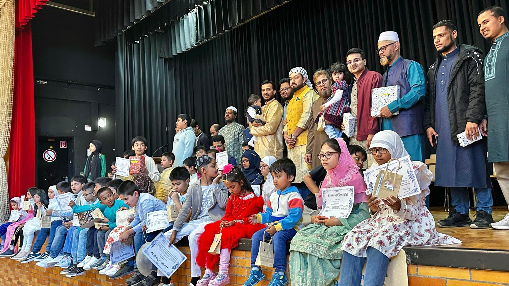
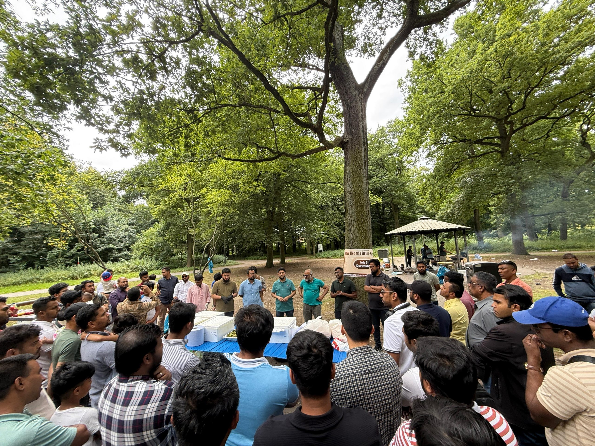
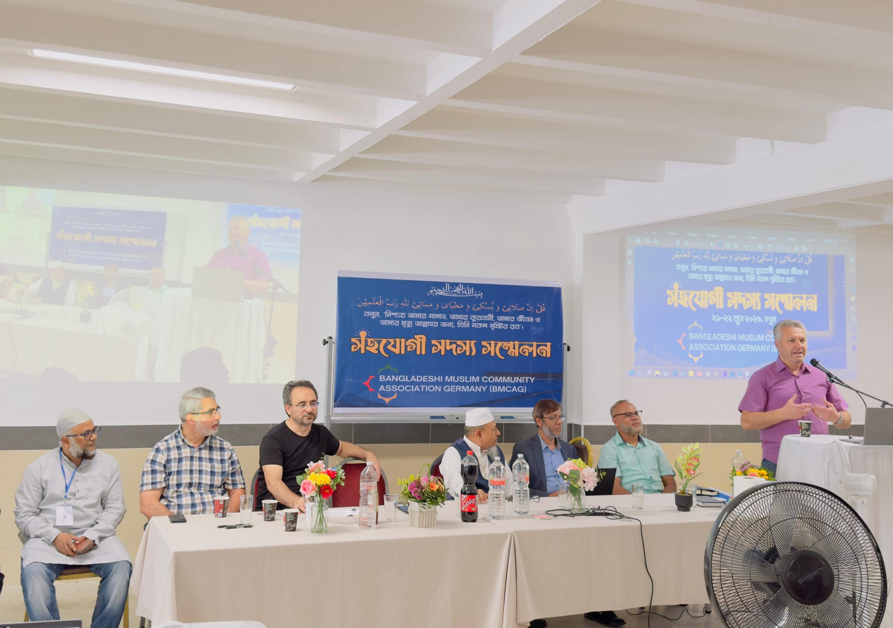

6. April 2025
Zur Startseite
Veranstaltungen
Veranstaltungen, Begegnungen und Vereinsleben
Die BMCAG organisiert Formate, die Familien, Mitglieder und regionale Gruppen zusammenbringen und das Gemeinschaftsleben sichtbar machen.


5. Juli 2025
Grillfest BMCAG NRW Nord

21.-22. Juni 2025
Jahresversammlung der Mitglieder
Familien
Regionale Begegnungen
Die Programme schaffen persönliche Verbindungen zwischen Familien, Vereinen und lokalen Gruppen.
Freizeit
Gemeinsame Aktivitäten
Offene Treffen und Freizeitformate geben dem Netzwerk eine einladende und sichtbare Form.
Mitglieder
Vereinsarbeit
Versammlungen und Planungsrunden geben der Gemeinschaft Richtung und gemeinsame Prioritäten.